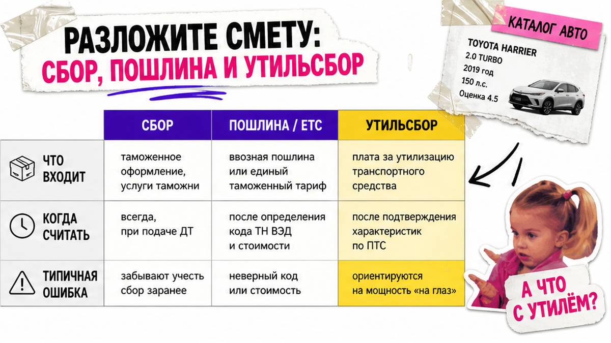
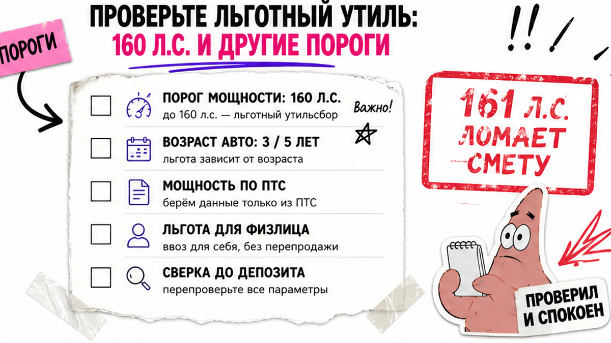

Алексей уже нашёл кроссовер "почти идеальный" за красивую цену в юанях и вбил цифры в первый попавшийся калькулятор растаможки авто – вышло "терпимо". Вечером друг сказал: "у тебя 165 лошадей – льготный утиль уже не твой". Боль знакомая: рука тянется к депозиту наугад, а в голове каша из пошлины, утильсбора и льготы 160 л.с. Ниже – как собрать смету на бумаге до перевода денег; результат – закрытый чеклист и вилка до депозита, без сюрприза на таможне.
Коротко по делу: Растаможка для физлица по ДВС обычно = таможенный сбор + единая ставка (пошлина/ЕТС) + утильсбор. Онлайн-калькулятор – ориентир, не счёт к оплате. Жёсткие пороги: 160 л.с., 3 000 см³, возраст 3 и 5 лет. Финальную вилку "под ключ" до депозита сверяйте в каталоге Авто-Сейлс или в Telegram @avtosales125.
Страна покупки – Китай, Корея или Япония – почти не меняет формулы пошлины и утиля. Меняются валюта, логистика и документы. Зато лишняя лошадиная сила выше 160 л.с. или переход возраста через 3/5 лет переворачивает смету сильнее "скидки" продавца. Во Владивостоке обычно так: сначала считаем, потом платим.

Боль новичка простая: одно "страшное число" вместо понятной сметы. На практике растаможка легкового авто для физлица (ДВС и обычный гибрид) складывается из трёх строк.
| Строка сметы | Что это простыми словами | От чего зависит |
|---|---|---|
| Таможенный сбор | Плата "за оформление" на таможне | Таможенная стоимость; с 01.01.2026 шкала от 1 231 до 73 860 ₽ |
| Пошлина / ЕТС | Единая ставка по правилам ЕАЭС | Возраст авто, объём двигателя, иногда цена |
| Утильсбор | Отдельный платёж сверх пошлины | База 20 000 ₽ × коэффициент; с 01.12.2025 учитывают мощность |
ЕТС – это "единая ставка": для личного ввоза ДВС пошлину считают по таблице ЕЭК, а не как набор НДС+акциз. Акциз и НДС в эту схему обычно не выносят. Электромобили – другая история: чаще совокупный платёж (пошлина около 15% + акциз по мощности + НДС 22% в 2026).
Сделайте: записывайте три строки отдельно. Не делайте: сравнивать только "итого" без разбивки. Избегайте цифры "с потолка" – используйте таблицу выше.
Схема сметы:
Данные авто → Сбор → Пошлина/ЕТС → Утильсбор → Плюс доставка и услуги → Вилка до депозита
Калькулятор растаможки авто 2026 честен ровно настолько, насколько честны ваши поля. Типичная ошибка – взять "год" с объявления и забыть месяц выпуска: возраст считают до дня, а корзины пошлины – до 3 лет / 3–5 / старше 5.
СБКТС – это сертификат безопасности конструкции; ЭПТС – электронный паспорт автомобиля. Без этих "бумажек" машина не ездит по правилам, даже если таможню уже прошли. На пальцах: калькулятор считает таможню, а "под ключ" – ещё и путь до номеров.
Сделайте: храните исходные цифры в одной заметке. Не делайте: подставлять мощность "на глаз" или цену без доставки.

Многие думают: "утиль будет 3 400 ₽, все так ездят". На практике льгота физлица сгорает целиком, если не выполнены условия одновременно.
Порог жёсткий: 161 л.с. снимает льготу целиком, не "пропорционально". В реальном проекте кейс вроде Mazda CX-5 на 165 л.с. как раз про это – красивая цена на площадке не спасает, если лошади уже "за чертой". Коэффициенты льготы: 0,17 → 3 400 ₽ (до 3 лет) и 0,26 → 5 200 ₽ (старше 3 лет). Коммерческий утиль считают от базы 20 000 ₽ × коэффициент по объёму, мощности и возрасту.
Сделайте: до депозита отметьте "льгота да/нет" по чеклисту. Не делайте: надеяться, что "почти 160" пройдёт как 160.
Частый миф: "из Китая пошлина дороже, чем из Японии". Формулы ЕЭК и утиля одни. Отличаются валюта сделки, логистика, комплект документов и то, насколько часто встречаются электромобили.
| Параметр | Китай | Корея | Япония |
|---|---|---|---|
| Формулы пошлины/утиля | Те же | Те же | Те же |
| На что смотреть в первую очередь | Электро/гибрид, документы, юани | Отчёты истории, воны, комплектация | Аукционный лист, возраст до дня, иены |
| Что реально двигает бюджет | Тип мотора + логистика | Мощность/объём + доставка | Возрастная корзина + доставка |
| Миф "страна дороже" | Не подтверждается формулами | Не подтверждается формулами | Не подтверждается формулами |
Например, электро из Китая считают иначе, чем бензиновый седан из Японии – из-за типа мотора и схемы платежа, а не "из-за страны". Выберите машину по параметрам сметы, а не по легенде.
Сделайте: сравнивайте два лота по возрасту, л.с., объёму и типу мотора. Не делайте: отбрасывать страну только из-за слухов про "дороже/дешевле".
Разные сайты выдают разные суммы – и это не обязательно "взлом". Обычно расходятся входные данные: курс ЦБ на день расчёта vs день декларации, перевод кВт в л.с., режим физлицо/юрлицо, забытый утиль, цена без доставки.
Онлайн-калькулятор – линейка, не касса. Инспектор может скорректировать таможенную стоимость. Курс для платежа берут на дату декларации, а не на вечер, когда вам "красиво посчитало". Поэтому ориентир полезен, а финальная вилка нужна под конкретный лот.
Актуальный расчёт под машину из каталога Авто-Сейлс – в каталоге avto-sales125.ru. Форм на этой странице нет: цифры под лот живут в каталоге и переписке.
Сделайте: фиксируйте курс, дату и все поля ввода. Не делайте: вносить депозит по самому низкому скрину из трёх сайтов.
Хотите внести депозит сразу после "красивой цены"? Стоп. Сначала закройте чеклист. После шагов ниже вы получите пакет данных и три строки сметы; сможете отметить льготу да/нет и сверить вилку до перевода.
Итоговый результат сегодня: закрытый чеклист, статус льготы и решение "депозит можно / ещё рано" без готовых сумм "с потолка". Если пункты закрыты – сможете принять решение. Если нет – депозит подождёт. На практике так дешевле нервов.
Нужна вилка по лоту – напишите в Telegram @avtosales125 или откройте каталог Авто-Сейлс. Офис во Владивостоке (Днепровская 40а, стр. 4) – хаб логистики: СВХ, таможня и выдача по России.
Материал проверен: редакция Авто-Сейлс (эксперты по авто под заказ из Японии, Кореи и Китая).
Достоверность: факты сверены с открытыми источниками по утильсбору и ЕТС (ПП РФ № 1713, TKS/отраслевые калькуляторы) и практикой заказов через Владивосток; актуальные расчёты под лот – в каталоге.
В нормальном калькуляторе 2026 – да, отдельной строкой. Если видите только пошлину без утиля, пересчитайте: для бюджета "под ключ" утиль обязателен. Сверьте, что выбран режим физлица и верный тип мотора.
Чаще всего виноваты курс, дата расчёта, перевод кВт↔л.с., цена без доставки или режим юрлица вместо физлица. Зафиксируйте поля и курс, затем сверьте вилку в каталоге Авто-Сейлс до депозита.
Те же формулы, что и для Японии: сбор + пошлина/ЕТС + утиль. Сначала выпишите возраст, объём, л.с., тип мотора и цену с доставкой. Для электро из Китая не подставляйте схему обычного ДВС.
Возраст до дня, мощность относительно 160 л.с., объём относительно 3 л, статус физлица и "один авто в год", плюс услуги сверх таможни. Нет сверки вилки – нет перевода.
Нет. Нужны все условия сразу: личное пользование, лимиты по л.с. и объёму, не больше одной машины в год, без продажи 12 месяцев. 161 л.с. – уже без льготы.
Калькулятор даёт ориентир на дату расчёта, не финальный счёт. Курс и корректировка стоимости на таможне могут сдвинуть итог. Для решения по депозиту берите вилку под конкретный лот у Авто-Сейлс.